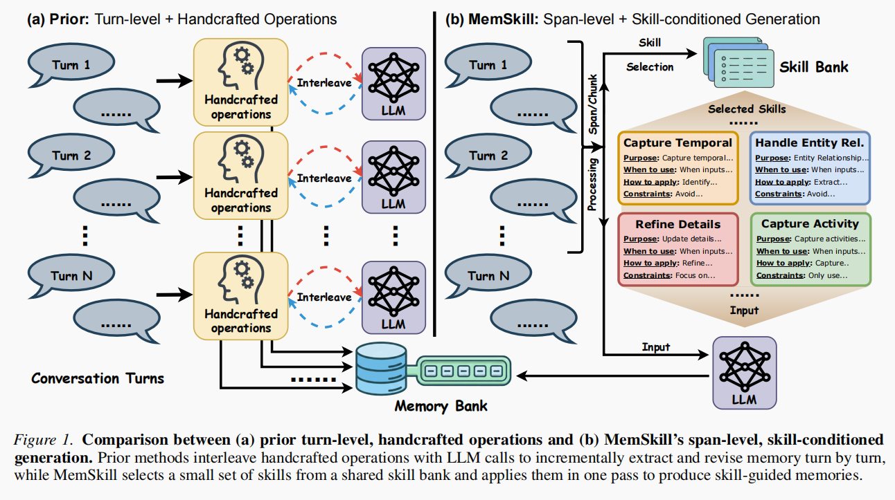
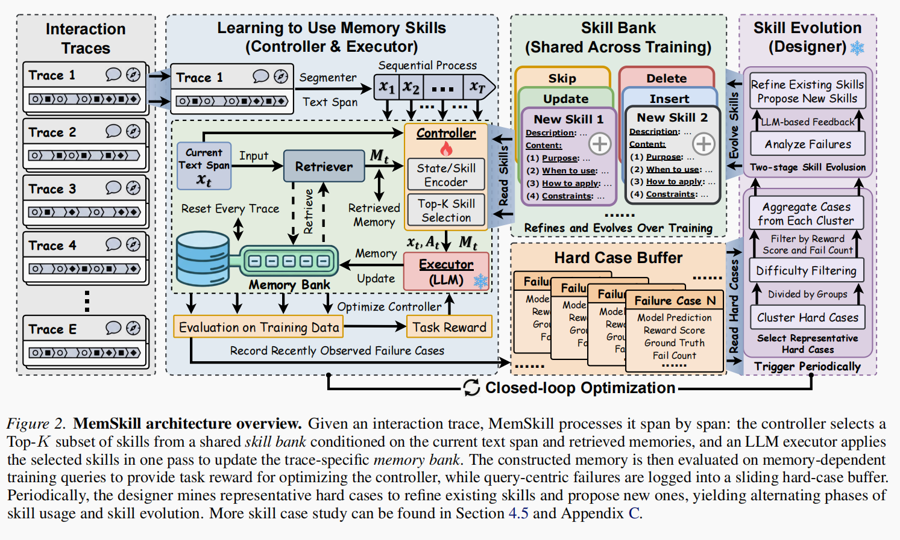
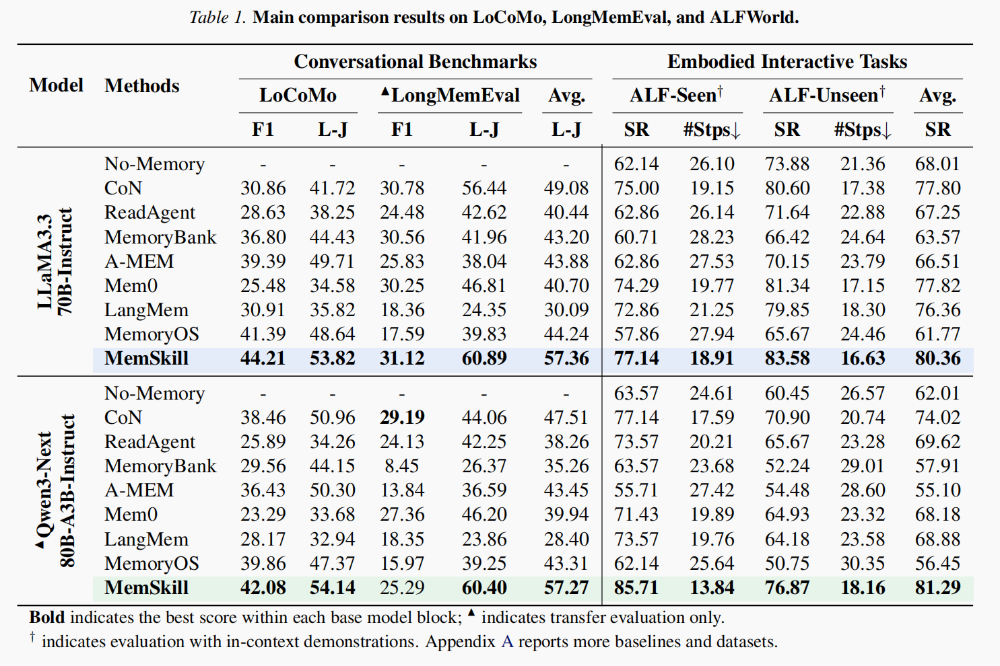

MemSkill: Learning and Evolving Memory Skills for Self-Evolving Agents
论文信息：Haozhen Zhang, Quanyu Long, Jianzhu Bao, Tao Feng, Weizhi Zhang, Haodong Yue, Wenya Wang. arXiv:2602.02474v2, 2026.05。 论文原文 把手工设计的 memory operation 抽象成可学习、可进化的 memory skills，再用 controller + executor + designer 形成闭环优化的 agent memory 方法。

1. 摘要 (Abstract)
- 核心问题：现有 LLM agent memory 系统大多依赖少量静态、手工设计的 操作（如 add / update / delete / skip），默认了“该记什么、怎么改记忆”的 人工先验，因此在交互模式多样、历史很长时容易僵化且低效。
- 核心想法：把记忆提取从“固定操作流水线”改写成 可学习、可复用、可进化的 memory skills。 这些 skills 描述的是“什么时候记、怎么记、怎么整合、怎么修订”。
- 方法结构：
- Controller：从 skill bank 中选择少量当前最相关的 skills。
- Executor：在选中 skills 的条件下，一次性生成当前 span 的 memory update。
- Designer：周期性分析 hard cases，细化旧 skills、提出新 skills。
- 整体闭环：一边学“怎么用 skills”，一边学“skills 本身怎么演化”， 同时优化 skill-selection policy 和 skill bank。
- 实验结论：在 LoCoMo、LongMemEval、HotpotQA、ALFWorld 上均优于强基线， 并且在跨模型、跨数据集、跨任务形态下都表现出较好的泛化能力。
2. 引言 (Introduction)
- 背景：随着 LLM agents 需要处理越来越长、越来越开放的交互历史， memory 变得重要；没有 memory，agent 很难保持长期一致性、复用过去经验。
- 现有路线：多数工作用外部 memory store 存摘要或关键事实，再做检索、更新、 压缩与裁剪。
- 作者认为的问题不在“有没有 memory”，而在“memory 是怎么构建的”：
- 传统系统通常把记忆管理写成固定模块或固定 primitives。
- 这些设计默认了人类对任务的理解，迁移到新分布时容易失效。
- 随着历史变长，逐 turn 地反复调用 LLM 做记忆维护，成本也越来越高。
- 作者提出的三个目标：
- 少依赖人工先验：memory behavior 应由交互数据驱动，而不是人工硬编码。
- 支持更大粒度的抽取：不只按 turn 处理，也能按更大的 span 处理长历史。
- skill-conditioned 的组合式构建：不是把流程拆成固定模块串联， 而是根据当前上下文组合少量最相关的 skills，一次性完成记忆构建。
- 论文定位：不是再设计一个新的固定 memory 架构， 而是让“记忆构建规则本身”成为可学习、可演化的对象。
3. 相关工作 (Related Work)
3.1 LLM Agent Memory Systems
- 这一类工作主要研究：
- 如何从长交互历史中抽取记忆；
- 如何检索相关记忆；
- 如何更新、压缩、删除记忆。
- 代表方法包括：MemoryBank、A-MEM、Mem0、MemoryOS、LightMem、 Memory-R1、Mem-α 等。
- 共同问题：即便使用 RL 或更复杂的 memory architecture， 很多方法仍依赖静态、手工指定的 memory operations 或模块边界。
- MemSkill 的差异：它演化的是 memory skills 本身， 而不是只在固定架构内学参数或调度。
3.2 Self-Evolving LLM Agents
- 另一条相关路线是 self-evolving agents， 如 ExpeL、EvolveR、Absolute Zero、Multi-Agent Evolve、SkillWeaver 等。
- 这些工作关注 agent 如何从经验中提炼原则、形成 curriculum、 或自我改进整体行为。
- MemSkill 的差异：它把“自演化”聚焦到 memory construction 这一子系统， 演化对象不是 general reasoning policy，而是记忆构建技能。
4. 方法论 (Method)

给定 interaction trace，controller 为每个 text span 从共享 skill bank 中选 Top-K skills，executor 基于这些 skills 更新 trace-specific memory bank；训练中收集 hard cases，designer 周期性改写 skill bank。
4.1 总览：把“记忆”与“记忆知识”分开
作者把系统拆成两个层次：
- Memory bank：针对某一条具体 trace 的记忆存储，保存这段交互产生的记忆。
- Skill bank：跨 traces 共享的可复用“记忆构建知识”，保存 reusable memory skills。
这样分层的好处是：
- memory bank 负责“这段历史里发生了什么”；
- skill bank 负责“面对这种历史，什么值得记、该怎么记”。
MemSkill 的训练就是两条线同时进行：
- 学会使用当前 skill bank；
- 根据 hard cases 继续改进 skill bank。
4.2 Skill Bank：把记忆操作写成可复用技能
一个 memory skill 包含两部分：
- description：短描述，用于表示与选择；
- content / instruction template：详细说明适用场景、使用方法、约束。
初始 skill bank 只有 4 个最基本的 primitives：
- Insert：插入新记忆
- Update：更新已有记忆
- Delete：删除失效记忆
- Skip / No-op：当前无需记忆变动
后续 designer 会在这些 primitives 之上：
- 细化已有 skill；
- 增加新的 task-specific / domain-specific skill。
关键点是：MemSkill 不是直接学习“哪条记忆该写成什么文本”， 而是学习“通过哪些技能来构造这些记忆”。
4.3 Controller：学习选择哪些 skills
4.3.1 输入状态
每个 step 处理一个 text span，而不是一个 turn。 controller 的输入包括：
- 当前 span 的文本表示；
- 从当前 trace 的 memory bank 中检索出的已有 memories。
然后把“当前上下文状态”与每个 skill 的 description embedding 做匹配， 为每个候选 skill 打分。
4.3.2 输出动作
- controller 不只选一个 skill， 而是从当前 skill bank 中选一个 Top-K ordered set；
- 这些 skills 会一起传给 executor；
- 这样既保持 skill context 简洁，又允许多个 skill 组合工作。
4.3.3 为什么这样设计
- skill bank 会不断演化，技能数不是固定的；
- 如果 controller 的 action head 绑定固定 skill 数量， 一旦新增或删减 skill 就很难兼容；
- 因此作者采用“状态表示 × 技能表示逐个打分”的方式， 让 controller 对变化中的 skill bank 仍然适用。
4.4 Executor：在 skills 条件下构造记忆
executor 是一个 LLM，它接收：
- 当前 text span；
- 检索到的已有 memories；
- controller 选出的 skills。
然后它在 一次 LLM 调用 中生成结构化 memory actions：
- INSERT
- UPDATE
- DELETE
核心变化是：
- 传统方法：逐 turn、按固定模块多次调用 LLM；
- MemSkill：逐 span、在多 skills 条件下一次性构造 memory updates。
这带来两个收益：
- 更适合长历史，减少重复调用；
- 能让多个互补 skills 在同一个 span 上协同工作。
4.5 Controller Optimization：用下游任务奖励学 skill selection
- controller 的监督信号不是人工标注的“应该选哪个 skill”， 而是下游任务效果；
- 一条 trace 的 memory bank 构建完成后， 用与该 trace 相关的 training queries 做评估；
- 得到的 task score（例如 F1 或 success rate） 作为 controller 的 reward。
训练算法使用 PPO：
- 动作是无放回的 Top-K skills 选择；
- 奖励最终来自 memory-dependent task performance；
- 因此 controller 学到的是： 在什么上下文下，哪些 skills 的组合最有助于后续任务。
4.6 Designer：根据 hard cases 演化 skills
这是 MemSkill 与“只会选 skill 的系统”最不一样的地方。
4.6.1 Hard-case buffer
训练过程中维护一个滑动窗口，记录最近的难例：
- query
- 检索到的 memories
- 模型回答
- 参考答案
- reward
- failure count
这些 case 会按难度与重复失败情况加权，优先保留真正说明问题的失败样本。
4.6.2 Representative case mining
- 作者先对 hard cases 做聚类，避免所有更新都围绕单一错误模式展开；
- 再从每类中选代表性失败样本，保证 designer 看到的是 多样而高价值 的失败模式。
4.6.3 Two-stage skill evolution
designer 的更新分两步：
- 分析失败原因：到底是哪些 memory behavior 缺失、模糊或不合理；
- 提出 skill edits：
- refine existing skills
- add new skills
也就是说，MemSkill 不只是“把错误样本加回训练”， 而是把失败提炼成新的记忆构建经验，再写回 skill bank。
4.6.4 稳定性机制
为了避免 designer 一次改坏整个系统，作者还加了：
- best snapshot rollback：skill 更新后如果性能退化，就回滚到最佳快照；
- early stopping：连续多轮 skill evolution 没有改善就提前停止；
- new-skill exploration：新 skill 刚加入时，暂时提高它们被选中的概率， 让 controller 尽快探索其价值。
4.7 Closed-Loop Optimization：交替学“用 skill”和“改 skill”
完整训练循环如下：
- 固定当前 skill bank，训练 controller 学会选 skill；
- executor 用选中的 skills 构建 memory bank；
- 收集 hard cases；
- designer 基于 hard cases 改写 skill bank；
- 回到第 1 步继续训练。
这就形成了一个闭环：
- controller 负责学会使用 skills；
- designer 负责让 skill bank 本身越来越强；
- 二者相互促进，形成 self-evolving memory system。
5. 实验 (Experiments)
5.1 实验设置
- 任务/数据集：
- LoCoMo：长对话记忆问答
- LongMemEval：超长对话记忆评测
- HotpotQA：用于测试跨分布迁移到文档型多跳 QA
- ALFWorld：具身交互环境
- 对比方法：No-Memory、CoN、ReadAgent、MemoryBank、A-MEM、Mem0、 LangMem、MemoryOS；部分实验还加入 LightMem、AWM、Expel。
- 基础模型：
- 训练主体主要用 LLaMA-3.3-70B-Instruct
- Qwen3-Next-80B-A3B-Instruct 用于 transfer evaluation
- 训练要点：
- controller 用 PPO 优化；
- 记忆构建默认按 span level 进行；
- 训练时每 100 steps 触发一次 designer 更新；
- 每次 evolution 最多 3 处 skill 修改。
5.2 主要结果

- LoCoMo / LongMemEval / ALFWorld 上整体最好。
- 在 LLaMA block 中：
- LoCoMo：MemSkill 的 L-J 为 53.82，高于 LightMem 的 51.95、 A-MEM 的 49.71、MemoryOS 的 48.64。
- LongMemEval：MemSkill 的 L-J 为 60.89，也是该 block 最优。
- ALFWorld：MemSkill 平均 success rate 为 80.36，高于其他方法。
- 在 Qwen transfer 设置下，不重新训练也依旧强：
- LoCoMo L-J 为 54.14；
- LongMemEval L-J 为 60.40；
- ALFWorld 平均 success rate 为 81.29。
结论很明确：
- MemSkill 学到的不是只对某个 backbone 有效的 prompt trick；
- 它抽象出了可以迁移的 memory behavior。
5.3 跨数据集与跨分布泛化
图片占位符：论文 Figure 3，把在 LoCoMo 上学到的 skill bank 直接迁移到 HotpotQA，在 50 / 100 / 200 文档拼接长度下比较 MemSkill、MemoryOS、A-MEM。
- 作者把 LoCoMo 上学到的 skills 直接迁移到 HotpotQA；
- HotpotQA 不是对话，而是长文档多跳问答，输入结构和证据组织都变了；
- 即便如此，MemSkill 仍持续优于 MemoryOS 与 A-MEM；
- 随着上下文更长、更噪声，MemSkill 的优势更明显。
这说明：
- MemSkill 学到的 skills 不是“对话表面模式”；
- 它更像是跨任务可复用的信息提取与修订行为。
5.4 消融实验
Table 2 的消融结果说明两个部件都重要：
- w/o Ctrl：把 learned controller 换成随机选 skill， LLaMA 的 L-J 从 53.82 降到 48.43；
- w/o Des：禁止 designer，只保留 4 个初始 primitives， LLaMA 的 L-J 降到 46.50；
- Refine-only：只允许修改旧 skill、不能新增 skill， LLaMA 的 L-J 为 47.45。
说明：
- 光有 skill 不够，还得学会选 skill；
- 光会 refine 不够，还要允许系统发明新 skill；
- 相比 controller，designer 的缺失带来的伤害更大， 说明 skill evolution 是这篇论文真正的核心增益来源。
5.5 运行成本分析
Table 3 比较了质量与运行成本：
- MemoryOS：L-J 48.64，输入 1013K tokens，1288 次 LLM calls
- A-MEM：L-J 49.71，输入 2850K tokens，1548 次 LLM calls
- LightMem：L-J 51.95，685 次 calls
- MemSkill (span size = 512)：
- L-J 53.82
- 249K input / 18K output
- 215 次 calls
结论：
- span-level 构造显著减少了 LLM 调用次数；
- 在质量更高的同时，运行代价反而更低；
span size是一个明确的效率-效果调节旋钮。
6. 分析 (Analysis)
6.1 为什么有效
我觉得这篇论文最关键的 insight 有三点：
- 把 memory management 从固定流程提升为 skill abstraction
- 传统方法在设计 memory pipeline；
-
MemSkill 在设计“可复用的记忆行为单元”。
-
把“用 skills”与“造 skills”分开优化
- controller 解决“当前该用哪几个 skill”；
- designer 解决“现有 skill bank 缺了什么”。
-
这样不仅能适应当前任务，还能持续扩展能力边界。
-
按 span 而不是按 turn 处理长历史
- 更符合长期依赖场景；
- 也让一次 LLM 调用可以综合多个 skills 完成记忆更新。
6.2 演化出来的 skills 具备明显领域特化
图片占位符：论文 Figure 4，展示 LoCoMo 与 ALFWorld 上演化得到的代表性 skills，比如时间线/活动细节类 skills，以及动作约束/物体位置类 skills。
作者展示的案例很有代表性：
- LoCoMo 上演化出的 skill 更关注：
- temporal context
- activity details
- entity nuances
- entity relationships
- ALFWorld 上演化出的 skill 更关注：
- action constraints
- object locations
- object movements
这说明 MemSkill 学到的是数据驱动的“该记什么”偏好， 而不是人工预设的一套统一规则。
6.3 这篇方法相比已有 memory work 的真正区别
它不是简单地：
- 换一个 retriever；
- 换一个 summarizer；
- 给 memory store 多几个操作；
- 用 RL 调一下固定操作的参数。
它真正改变的是：
- memory behavior 的表示方式；
- memory behavior 的学习方式；
- memory behavior 的持续演化机制。
因此它更接近“让 agent 学会如何构造 memory”， 而不只是“让 agent 用一个更好的 memory module”。
7. 结论 (Conclusion)
- MemSkill 把 agent memory 从“手工设计的操作流水线”重构为 可学习、可组合、可进化的 skill bank。
- 通过 controller + executor + designer 的闭环， 它能同时学会：
- 当前上下文该用哪些 skills；
- skill bank 本身该如何持续改进。
- 实验表明，它在：
- 对话式长时记忆，
- 文档型多跳问答，
- 具身交互任务 上都有效，并且有良好的跨模型、跨数据集迁移能力。
局限性 (Limitations)
- 论文主要验证的是 benchmark 场景下的算法有效性；
- 对真实部署中更关键的 隐私、用户同意、访问控制、数据保留策略 还没有系统展开；
- 因此它更像是“agent memory 学习机制”的研究原型， 而不是可直接落地的完整生产系统方案。
8. 一句话总结
MemSkill 的核心贡献不是设计了另一套 memory module， 而是把“怎么构造记忆”本身变成了一个可学习、可演化的 skill system。